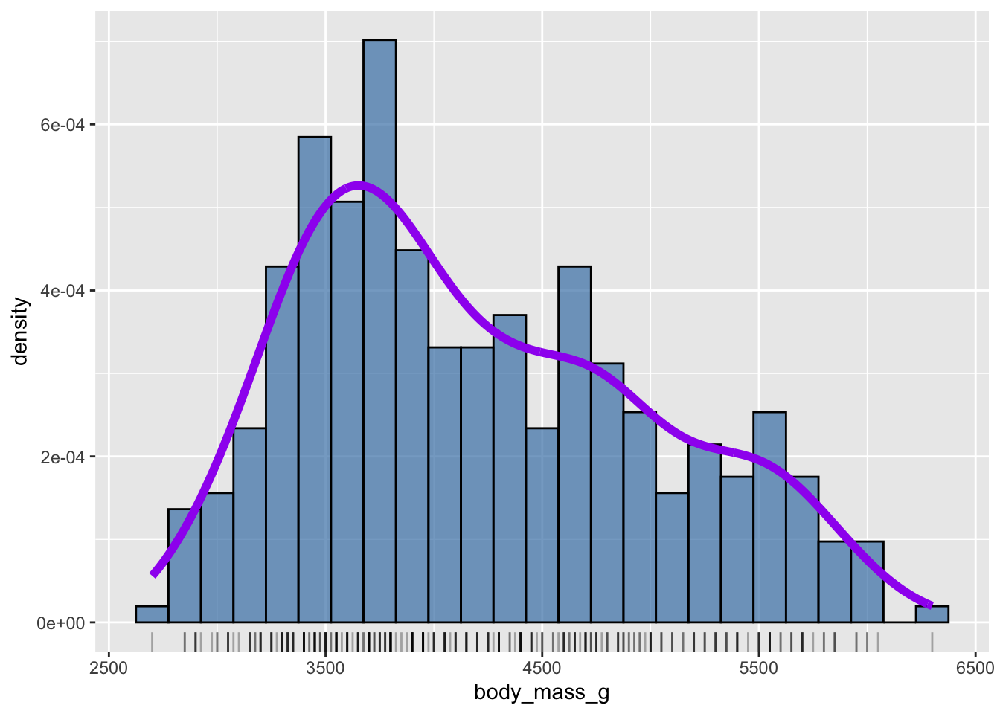
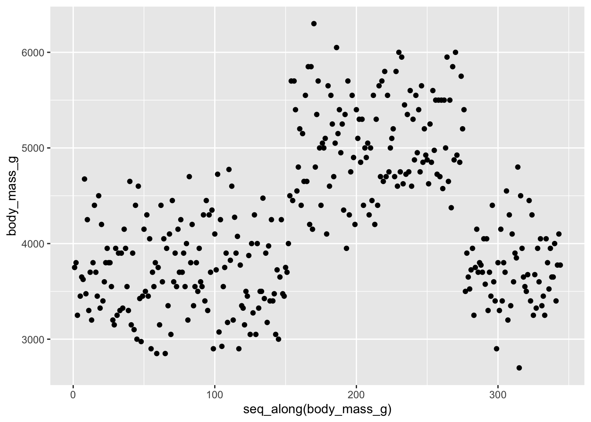
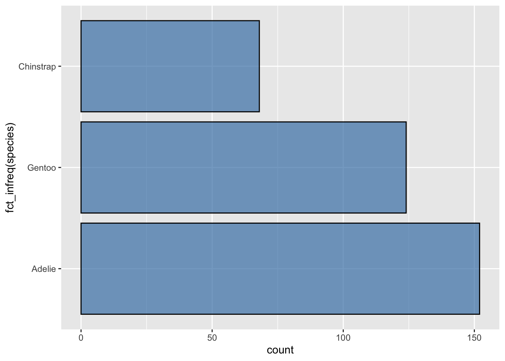
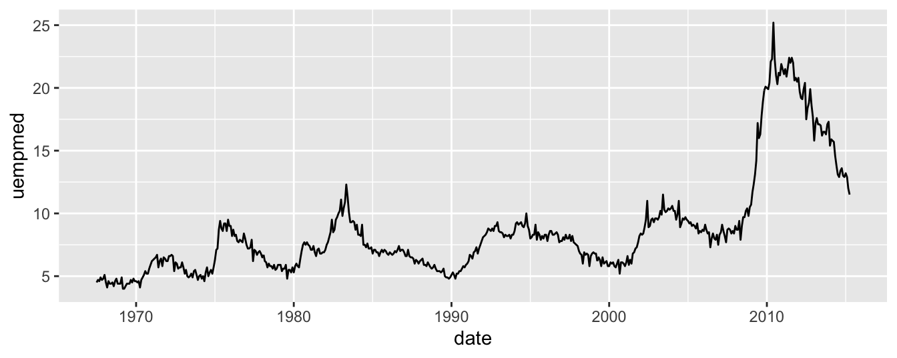
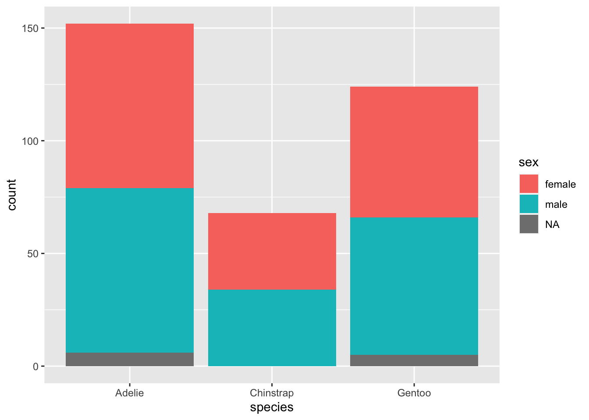
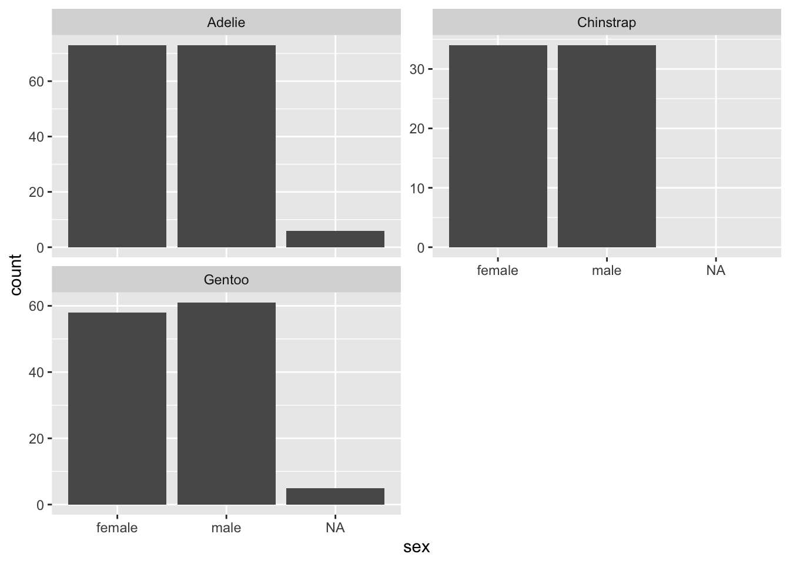
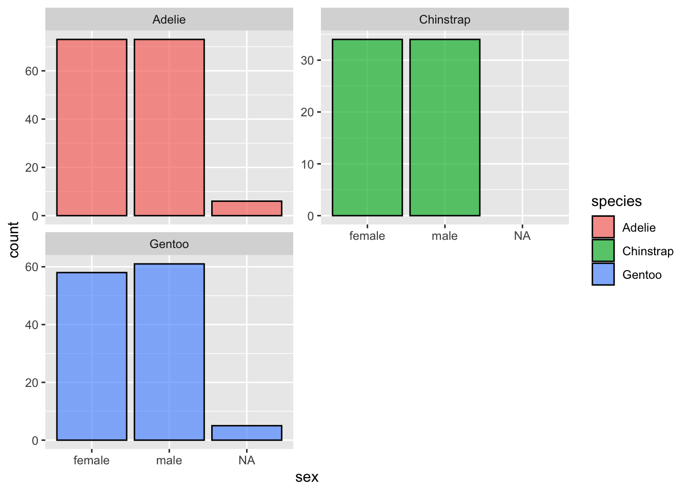

library(ggplot2)
library(dplyr)
library(palmerpenguins)3.1 Préambule
Dans le Chapitre 1 et le Chapitre 2, vous avez découvert les concepts essentiels qu’il est important de maîtriser avant de commencer à explorer en détail des données dans R. Les éléments de syntaxe abordés dans la Section 1.3 sont nombreux et vous n’avez probablement pas tout retenu. C’est pourquoi je vous conseille de garder les tutoriels de DataCamp à portée de main afin de pouvoir refaire les parties que vous maîtrisez le moins. Ce n’est qu’en répétant plusieurs fois ces tutoriels que les choses seront vraiment comprises et que vous les retiendrez. Ainsi, si des éléments de code présentés ci-dessous vous semblent obscurs, revenez en arrière : toutes les réponses à vos questions se trouvent probablement dans les chapitres précédents.
Après la découverte des bases du langage R, nous abordons maintenant les parties de ce livre qui concernent la “science des données” (ou “Data Science” pour nos amis anglo-saxons). Nous allons voir dans ce chapitre qu’outre les fonctions View() et glimpse(), l’exploration visuelle via la représentation graphique des données est un moyen indispensable et très puissant pour comprendre ce qui se passe dans un jeu de données.
Important
La visualisation de vos données devrait toujours être un préalable indispensable à toute analyse statistique.
La visualisation des données est en outre un excellent point de départ quand on découvre la programmation sous R, car ses bénéfices sont clairs et immédiats : vous pouvez créer des graphiques élégants et informatifs qui vous aident à comprendre les données. Dans ce chapitre, vous allez donc plonger dans l’art de la visualisation des données, en apprenant la structure de base des graphiques réalisés avec ggplot2 qui permettent de transformer des données numériques et catégorielles en graphiques.
Toutefois, la visualisation seule ne suffit généralement pas. Il est en effet souvent nécessaire de transformer les données pour produire des représentations plus parlantes. Ainsi, dans le Chapitre 4, vous découvrirez les fonctions clés qui vous permettront de sélectionner des variables importantes, de filtrer des observations, de créer de nouvelles variables, ou d’en modifier la forme.
Ce n’est qu’en combinant les transformations de données et représentations graphiques d’une part, avec votre curiosité et votre esprit critique d’autre part, que vous serez véritablement en mesure de réaliser une analyse exploratoire de vos données à la fois utile et pertinente. C’est la seule façon d’identifier des questions intéressantes sur vos données, afin de tenter d’y répondre par les analyses statistiques et la modélisation qui seront abordées lors des prochains semestres.
Dans ce chapitre, nous aurons besoin des packages suivants :
Si ce n’est pas déjà fait, pensez à les installer avant de les charger en mémoire.
Au niveau le plus élémentaire, les graphiques permettent de comprendre comment les variables se comparent en termes de tendance centrale (à quel endroit les valeurs ont tendance à être localisées, regroupées) et leur dispersion (comment les données varient autour du centre). La chose la plus importante à savoir sur les graphiques est qu’ils doivent être créés pour que votre public (le professeur qui vous évalue, le collègue avec qui vous collaborez, votre futur employeur, etc.) comprenne bien les résultats et les informations que vous souhaitez transmettre. Il s’agit d’un exercice d’équilibriste : d’une part, vous voulez mettre en évidence autant de relations significatives et de résultats intéressants que possible, mais de l’autre, vous ne voulez pas trop en inclure, afin d’éviter de rendre votre graphique illisible ou de submerger votre public. Tout comme n’importe quel paragraphe de document écrit, un graphique doit permettre de communiquer un message (une idée forte, un résultat marquant, une hypothèse nouvelle, etc).
Comme nous le verrons, les graphiques nous aident également à repérer les tendances extrêmes et les valeurs aberrantes dans nos données. Nous verrons aussi qu’une façon de faire, assez classique, consiste à comparer la distribution d’une variable quantitative pour les différents niveaux d’une variable catégorielle.
Objectifs
Dans ce chapitre, vous apprendrez à :
- faire différents types de graphiques exploratoires avec le package
ggplot2 - choisir le ou les graphiques appropriés selon la nature des variables dont vous disposez ou que vous souhaitez mettre en relation
- mettre vos graphiques en forme pour les intégrer dans vos rapports ou compte-rendus de TP
3.2 La grammaire des graphiques
Les lettres gg du package ggplot2 sont l’abréviation de “grammar of graphics” : la grammaire des graphiques. De la même manière que nous construisons des phrases en respectant des règles grammaticales précises (usage des noms, des verbes, des sujets et adjectifs…), la grammaire des graphiques établit un certain nombre de règles permettant de construire des graphiques : elle précise les composants d’un graphique en suivant le cadre théorique défini par Wilkinson (2005).
3.2.1 Éléments de la grammaire
En bref, la grammaire des graphiques nous dit que :
Un graphique est l’association (
mapping) de données/variables (data) à des attributs esthétiques (aesthetics) d’objets géométriques (geometric objects).
Pour clarifier, on peut disséquer un graphique en 3 éléments essentiels :
data: le jeu de données contenant les variables que l’on va associer à des objets géométriques. Pourggplot2les données doivent obligatoirement être stockées dans undata.frameou untibblegeom: les objets géométriques en question. Cela fait référence aux types d’objets que l’on peut observer sur le graphique (des points, des lignes, des barres, etc.)aes: les attributs esthétiques des objets géométriques présents sur le graphique. Par exemple, la position sur les axesxety, la couleur, la taille, la transparence, la forme, etc. Chacun de ces attributs esthétiques peut-être associé à une variable de notre jeu de données.
Examinons un exemple pour bien comprendre.
3.2.2 Gapminder
En février 2006, un statisticien du nom de Hans Rosling a donné un TED Talk intitulé “The best stats you’we ever seen”. Au cours de cette conférence, Hans Rosling présente des données sur l’économie mondiale, la santé et le développement des pays du monde. Les données sont disponibles sur ce site et dans le package gapminder.
Pour l’année 2007, le jeu de données contient des informations pour 142 pays. Examinons les premières lignes de ce jeu de données :
| Country | Continent | Life Expectancy | Population | GDP per Capita |
|---|---|---|---|---|
| Afghanistan | Asia | 43.828 | 31889923 | 974.5803 |
| Albania | Europe | 76.423 | 3600523 | 5937.0295 |
| Algeria | Africa | 72.301 | 33333216 | 6223.3675 |
| Angola | Africa | 42.731 | 12420476 | 4797.2313 |
| Argentina | Americas | 75.320 | 40301927 | 12779.3796 |
| Australia | Oceania | 81.235 | 20434176 | 34435.3674 |
Pour chaque ligne, les variables suivantes sont décrites :
Country: le paysContinent: le continentLife Expectancy: espérance de vie à la naissancePopulation: nombre de personnes vivant dans le paysGDP per Capita: produit intérieur brut (PIB) par habitant en dollars américains. GDP est l’abréviation de “Growth Domestic Product”. C’est un indicateur de l’activité économique d’un pays, parfois utilisé comme une approximation du revenu moyen par habitant.
Examinons maintenant la Figure 3.1 qui représente ces variables pour chacun des 142 pays de ce jeu de données (notez l’utilisation de la notation scientifique dans la légende, et de l’échelle logarithmique de l’axe des abscisses).

Si on décrypte ce graphique du point de vue de la grammaire des graphiques, on voit que :
- la variable
GDP per Capitaest associée à l’aestheticxde la position des points - la variable
Life Expectancyest associée à l’aestheticyde la position des points - la variable
Populationest associée à l’aestheticsize(taille) des points - la variable
Continentest associée à l’aestheticcolor(couleur) des points
Ici, l’objet géométrique (ou geom) qui représente les données est le point. Les données (ou data) sont contenues dans le tableau gapminder et chacune de ces variables est associée (mapping) aux caractéristiques esthétiques des points.
3.2.3 Autres éléments de la grammaire des graphiques
Outre les éléments indispensables évoqués ici (data, mapping, aes, et geom), il existe d’autres aspects de la grammaire des graphiques qui permettent de contrôler l’aspect des graphiques. Ils ne sont pas toujours indispensables. Nous en verrons néanmoins quelque-uns particulièrement utiles :
facet: c’est un moyen très pratique de scinder le jeu de données en plusieurs sous-groupes et de produire automatiquement un graphique pour chacun d’entre eux.position: permet notamment de modifier la position des barres d’un barplot.labs: permet de définir les titres, sous-titres et légendes des axes d’un graphiquetheme: permet de modifier l’apect général des graphiques en appliquant des thèmes prédéfinis ou en modifiant certains aspects de thèmes existants
3.2.4 Le package ggplot2
Comme indiqué plus haut, le package ggplot2 (Wickham et al. 2022) permet de réaliser des graphiques dans R en respectant les principes de la grammaire des graphiques. Vous avez probablement remarqué que depuis le début de la section Section 3.2, beaucoup de termes sont écrits dans la police réservée au code informatique. C’est parce que les éléments de la grammaire des graphiques sont tous précisés dans la fonction ggplot() qui demande, au grand minimum, que les éléments suivants soient spécifiés :
- le nom du
data.framecontenant les variables qui seront utilisées pour le graphique. Ce nom correspond à l’argumentdatade la fonctionggplot(). - l’association des variables à des attributs esthétiques. Cela se fait grâce à l’argument
mappinget la fonctionaes()
Après avoir spécifié ces éléments, on ajoute des couches supplémentaires au graphique grâce au signe +. La couche la plus essentielle à ajouter à un graphique, est une couche contenant un élément géométrique, ou geom (par exemple des points, des lignes ou des barres). D’autres couches peuvent s’ajouter pour spécifier des titres, des facets ou des modifications des axes et des thèmes du graphique.
Dans le cadre de ce cours, nous nous limiterons aux 4 types de graphiques suivants :
- les nuages de points
- les graphiques en lignes
- les histogrammes
- les diagrammes bâtons
3.2.5 Votre premier graphique
Reprenons maintenant le jeu de données penguins :
penguins# A tibble: 344 × 8
species island bill_length_mm bill_depth_mm flipper_…¹ body_…² sex year
<fct> <fct> <dbl> <dbl> <int> <int> <fct> <int>
1 Adelie Torgersen 39.1 18.7 181 3750 male 2007
2 Adelie Torgersen 39.5 17.4 186 3800 fema… 2007
3 Adelie Torgersen 40.3 18 195 3250 fema… 2007
4 Adelie Torgersen NA NA NA NA <NA> 2007
5 Adelie Torgersen 36.7 19.3 193 3450 fema… 2007
6 Adelie Torgersen 39.3 20.6 190 3650 male 2007
7 Adelie Torgersen 38.9 17.8 181 3625 fema… 2007
8 Adelie Torgersen 39.2 19.6 195 4675 male 2007
9 Adelie Torgersen 34.1 18.1 193 3475 <NA> 2007
10 Adelie Torgersen 42 20.2 190 4250 <NA> 2007
# … with 334 more rows, and abbreviated variable names ¹flipper_length_mm,
# ²body_mass_gComme évoqué plus haut, il s’agit d’un tibble. Plusieurs de ses variables concernent la biométrie des manchots, en particulier de son bec (voir Figure 3.2).

Supposons qu’on cherche à déterminer si la longueur du bec des manchots est proportionnelle à leur masse. Pour produire un graphique permettant de le déterminer, nous avons besoin des éléments suivants :
data: le tableaupenguins- un objet géométrique, ici, des points (
geom_point()) puisque nous disposons de 2 variables numériques (plus de détails à ce sujet plus bas) - l’association de certaines variables du jeu de données (ici,
body_mass_getbill_length_mm) à certaines caractéristiques esthétiques du graphiques (ici, la position sur les axes desxet desy), grâce à l’argumentmappinget la fonctionaes().
Concrètement, voilà le code qu’il faut taper dans votre script :
ggplot(data = penguins, mapping = aes(x = body_mass_g, y = bill_length_mm))
Cette première ligne de code permet de faire plusieurs choses :
- on indique à
Rqu’on souhaite faire un graphique (avec la fonctionggplot()) - on indique à
Rque les données sont contenues dans l’objetpenguinsavecdata = penguins - on associe (avec
mapping =la variablebody_mass_gà l’axe desxet la variablebill_length_mmà l’axe desy. On fait cela grâce àaes(x = body_mass_g, y = bill_length_mm)
Cette commande génère la première couche du graphique. Il n’y a pas encore de données car nous n’avons pas indiqué quel type d’objet géométrique nous souhaitons afficher, mais la fenêtre graphique est bel et bien créée, les axes apparaissent, ils sont légendés et leur échelle est adaptée aux variables du tableau penguins que nous avons sélectionnées. Pour terminer le graphique, il nous faut donc ajouter une seconde couche, celle de l’objet géométrique :
ggplot(data = penguins, mapping = aes(x = body_mass_g, y = bill_length_mm)) +
geom_point()Warning: Removed 2 rows containing missing values (geom_point).
Au moment de produire ce graphique, R nous indique que 2 lignes du tableau penguins ne figurent pas sur ce graphique car elles possèdent des données manquantes (NA), pour l’une et/ou l’autre des variables que nous avons sélectionnées. La fonction geom-point() est donc incapable de les placer sur le graphique.
Vous avez donc ici un premier exemple de graphique très simple. Il est loin d’être parfait (à minima, le titre des axes devrait être modifié), mais il a le mérite de vous présenter la syntaxe que vous devrez utiliser pour produire presque tous les graphiques qui vous seront utiles avec ggplot2. En outre, on peut percevoir qu’il semble exister une relation positive (mais imparfaite) entre longueur des becs et masse des individus. Il faut toutefois être prudent car nous avons ici utilisé toutes les données disponibles (donc les données des 3 espèces à la fois), ce qui est loin d’être pertinent.
En résumé
- Au sein de la fonction
ggplot(), on spécifie 2 composants de la grammaire des graphiques :- le nom du tableau contenant les données grâce à l’argument
data = penguins - l’association (
mapping) des variables du tableau de données à des caractéristiques esthétiques (aes()) en précisantaes(x = body_mass_g, y = bill_length_mm):- la variable
body_mass_gest associée à l’esthétique de positionx - la variable
bill_length_mmest associée à l’esthétique de positiony
- la variable
- le nom du tableau contenant les données grâce à l’argument
- On ajoute une couche au graphique
ggplot()grâce au symbole+. La couche en question précise le troisième élément indispensable de la grammaire des graphiques : l’objetgeométrique. Ici, les objets sont despoints. On le spécifie grâce à la fonctiongeom_point().
Quelques remarques concernant les couches :
- Notez que le signe
+est placé à la fin de la ligne. Vous recevrez un message d’erreur si vous le placez au début. - Quand vous ajoutez une couche à un graphique, je vous encourage vivement à presser la touche
enterde votre clavier juste après le symbole+. Ainsi, le code correspondant à chaque couche sera sur une ligne distincte, ce qui augmente considérablement la lisibilité de votre code. - Comme indiqué dans la Section 1.3.4.3, tant que les arguments d’une fonction sont spécifiés dans l’ordre, on peut se passer d’écrire leur nom. Ainsi, les deux blocs de commande suivants produisent exactement le même résultat :
# Le nom des arguments est précisé
ggplot(data = penguins, mapping = aes(x = body_mass_g, y = bill_length_mm)) +
geom_point()
# Le nom des arguments est omis
ggplot(penguins, aes(x = body_mass_g, y = bill_length_mm)) +
geom_point()3.2.6 Exercices
- Donnez une raison pratique expliquant pourquoi les variables
body_mass_getbill_length_mmont une relation positive - Quelles variables (pas nécessairement dans le tableau
penguins) pourraient avoir une corrélation négative (relation négative) avecbody_mass_g? Pourquoi ? Rappelez-vous que nous étudions ici des variables numériques. - Citez les éléments de ce graphique/de ces données qui vous sautent le plus aux yeux ?
- Créez un nouveau nuage de points en utilisant d’autres variables du jeu de données
penguins
3.3 Quel graphique dans quelle situation ?
Il n’est pas possible de faire n’importe quel type de graphique dans n’importe quelle situation. Selon le nombre de variables dont on dispose ou que l’on souhaite examiner, et selon la nature de ces variables (numériques et/ou catégorielles), le choix des types de graphiques possibles sera limité. Par exemple, les diagrammes bâtons sont réservés aux variables catégorielles, alors que les histogrammes sont possibles uniquement avec les variables numériques continues. Néanmoins, dans certaines situations, plusieurs choix de graphiques seront possibles, et vous aurez donc une certaine liberté. Vos choix seront alors guidés par les objectifs que vous souhaiterez atteindre grâce aux graphiques, ainsi que par vos préférences.
Objectifs
Dans la suite de ce chapitre, nous traiterons donc des situations les plus courantes : quel(s) type(s) de graphique(s) produire lorsque l’on dispose d’une, deux ou trois variables ? Quel(s) type(s) de graphique(s) produire lorsque les variables sont toutes numériques, toutes catégorielles, ou lorsqu’on dispose de variables des deux types ?
Pour chaque situation, un ou des exemples seront fournis à partir des données du tableau penguins. Cela sera aussi l’occasion de présenter quelques subtilités liées à l’utilisation du package ggplot2.
3.4 Une seule variable numérique
Lorsque l’on souhaite examiner une unique variable numérique, deux types de représentations graphiques sont en général possible :
- les histogrammes : la variable d’intérêt est placée sur l’axe des
xdu graphique. Les valeurs utilisées sur l’axe desyest calculée automatiquement par le logiciel. - les nuages de points : la variable d’intérêt est placée sur l’axe des
y. L’axe desxporte soit un simple numéro d’indice pour chaque observation, soit une unique valeur sans importance.
Les syntaxes et options pour ces 2 types de graphiques sont présentées ci-dessous.
3.4.1 Les histogrammes
3.4.1.1 Syntaxe élémentaire
Imaginons que l’on s’intéresse à la variable body_mass_g du jeu de données penguins.
La syntaxe permettant de produire un histogramme, sous sa forme la plus simple, est la suivante :
ggplot(penguins, aes(x = body_mass_g)) +
geom_histogram()`stat_bin()` using `bins = 30`. Pick better value with `binwidth`.Warning: Removed 2 rows containing non-finite values (stat_bin).
Deux messages nous sont adressés par le logiciel :
Message d'avis: Removed 2 rows containing non-finite values (stat_bin). Ce message indique, comme pour le premier nuage de points, que 2 individus du tableaupenguinsont une masse corporelle inconnue (NA). Ces 2 individus (donc les deux lignes correspondantes), ont été ignorés pour produire ce graphique'stat_bin()' using 'bins = 30'. Pick better value with 'binwidth'. Ce message indique queRa choisi pour nous les limites des classes utilisées pour faire l’histogramme. Sur un histogramme, la variable d’intérêt (toujours numérique et continue), qui apparaît sur l’axe des abscisses, est en effet “découpée” en plusieurs classes, en général de même taille, afin de permettre une représentation de la distribution des valeurs. Ici,Rindique qu’il a créé 30 catégories pour nous, et que nous pouvons faire un choix différent grâce à l’argumentbinwidth. Nous y reviendrons un peu plus loin.
Sur ce graphique, l’axe des abscisses porte donc la variable continue “découpée” en classes de mêmes largeur, et l’axe des ordonnées renseigne sur le nombre (count ou fréquence absolue) d’individus observés dans chaque classe. Les zones du graphique où les barres sont les plus hautes indiquent donc les caractéristiques des individus observés le plus fréquemment. À l’inverse, les barres les plus courtes correspondent à des valeurs de masse rarement observées. Au final, ce type de graphique permet de visualiser la distribution des données pour une variable numérique continue.
Ici, on constate qu’une majorité d’individus semble avoir des masses proches de 3500 grammes. Une autre portion non négligeable des individus (mais moins importante) semble avoir une masse légèrement supérieure à 4500 grammes. Enfin, les masses supérieures à 6000 grammes sont très rares. L’histogramme nous permet également de visualiser l’étendue des données : les manchots étudiés ici ont des masses qui s’étalent d’un peu plus de 2500 grammes à un peu moins de 6500 grammes.
3.4.1.2 Couleur
Pour rendre ce graphique plus facilement lisible, on peut en modifier la couleur :
- la couleur de remplissage des barres peut-être spécifiée grâce à l’argument
fill = - la couleur de contour des barres peut-être spécifiée grâce à l’argument
color =
Une liste des couleurs disponibles dans R peut être affichée dans la console en tapant :
colors()Vous pouvez voir à quelle couleur correspond chacun de ces noms dans ce document pdf.
Mettons à jour notre histogramme en ajoutant un peu de couleur :
ggplot(penguins, aes(x = body_mass_g)) +
geom_histogram(fill = "steelblue", color = "black")`stat_bin()` using `bins = 30`. Pick better value with `binwidth`.Warning: Removed 2 rows containing non-finite values (stat_bin).
Les 30 classes de masses sont maintenant plus facilement visibles et distingables.
3.4.1.3 À l’intérieur ou à l’extérieur de aes() ?
Les couleurs de remplissage et de contour des barres d’un histogramme font partie des caractéristiques esthétiques du graphique. Pourtant, elles ne sont pas précisées à l’intérieur de la fonction aes(). La raison est simple mais importante :
Important
On place à l’intérieur de aes() uniquement les caractéristiques esthétiques du graphique que l’on souhaite associer à des variables du jeu de données.
Ici, les couleurs que l’on indique sont des constantes : toutes les barres ont les mêmes couleur de remplissage et de contour. On n’associe pas une variable du jeu de données à ces caractéristiques esthétiques. On place donc fill = et color = à l’extérieur de aes(). Si on se trompe, voilà ce qui se produit :
ggplot(penguins, aes(x = body_mass_g)) +
geom_histogram(aes(fill = "steelblue", color = "black"))`stat_bin()` using `bins = 30`. Pick better value with `binwidth`.Warning: Removed 2 rows containing non-finite values (stat_bin).
Les couleurs qui apparaissent ne correspondent pas à ce qui est demandé, et une légende ne correspondant à rien apparaît à droite du graphique. La syntaxe utilisée ici suppose en effet que "steelblue" et "black" seraient des variables du jeu de données penguins. Puisqu’elles n’existent pas, R essaie de se débrouiller pour interpréter comme il peut ce qu’on lui demande, et finit par produire ce graphique incohérent. La couleur utilisée est la première couleur de la palette par défaut de ggplot2.
Pour élaborer des graphiques plus avancés, il faudra donc toujours vous poser la question suivante : la caractéristique esthétique que je souhaite modifier doit-elle être associée à une valeur constante que je fixe pour toutes les barres ou tous les points d’un graphique, et alors, je l’indique en dehors de aes(), ou est-elle au contraire associée à une variable du jeu de données, et alors, je l’indique à l’intérieur de aes().
Il est bien sûr possible d’avoir un mélange des deux. Par exemple, le code suivant permet d’associer la couleur de remplissage au sexe des individus étudiés (variable sex du jeu de données penguins), et de spécifier une valeur constante pour la couleur de contour des barres (ici, le noir) :
ggplot(penguins, aes(x = body_mass_g)) +
geom_histogram(aes(fill = sex), color = "black")`stat_bin()` using `bins = 30`. Pick better value with `binwidth`.Warning: Removed 2 rows containing non-finite values (stat_bin).
On constate que toutes les barres ont un contour noir, mais que plusieurs couleurs de remplissage apparaissent maintenant, selon le sexe des individus, dans chaque classe de masse. Une légende adaptée est aussi créée automatiquement à droite du graphique. On apprend ainsi que les individus les plus lourds sont tous des mâles. On constate également que le sexe de certains individus est inconnu.
Au final, nous ne sommes déjà plus dans la situation où on examine une unique variable numérique. Nous avons en effet ici un graphique nous permettant de mettre en relation une variable numérique (la masse des individus en grammes) et une variable catégorielle (le sexe des individus). Nous reviendrons plus tard sur ce type de graphiques.
3.4.1.4 La largeur des classes
Comme évoqué plus haut, par défaut, R choisit arbitrairement de découper la variable numérique utilisée en 30 classes de même largeur afin de produire l’histogramme. Ça n’est que rarement un bon choix, et malheureusement, il n’y a pas de règle permettant de définir à coup sûr le bon nombre de classes pour visualiser au mieux la distribution d’une variable numérique. Il faut en effet presque toujours procéder par essais-erreurs successifs. Il est possible d’ajuster les caractéristiques (nombre et/ou largeur) des classes de l’histogramme de l’une des 3 façons suivantes :
- En ajustant le nombre de classes avec
bins. - En précisant la largeur des classes avec
binwidth. - En fournissant manuellement les limites des classes avec
breaks.
ggplot(penguins, aes(x = body_mass_g)) +
geom_histogram(fill = "steelblue", color = "black",
bins = 10)Warning: Removed 2 rows containing non-finite values (stat_bin).
Ici, diminuer le nombre de classes à 10 a pour effet de trop lisser la distribution des données. On ne visualise plus les variations subtiles de la distribution. À l’inverse, trop augmenter le nombre de classes n’est pas pertinent non plus :
ggplot(penguins, aes(x = body_mass_g)) +
geom_histogram(fill = "steelblue", color = "black",
bins = 100)Warning: Removed 2 rows containing non-finite values (stat_bin).
Ici, passer à 100 classes de taille génère un histogramme plein de trous, avec des classes très étroites, dont certaines sont très représentées, et immédiatement suivies ou précédées par des classes très peu représentées. Cela n’a pas de logique, et c’est presque toujours le signe qu’il faut réduire le nombre de classes.
Au final, pour ces données, un nombre de classes compris entre 20 et 30 semble un bon choix :
ggplot(penguins, aes(x = body_mass_g)) +
geom_histogram(fill = "steelblue", color = "black",
bins = 25)Warning: Removed 2 rows containing non-finite values (stat_bin).
C’est un bon choix, entre trop peu d’information, et trop de bruit visuel. Évidemment, ce nombre sera différent pour chaque jeu de données. On constate ici à peu près 3 pics (autour de 3500 grammes, un peu au-dessus de 4500 grammes, et autour de 5500 grammes) qui reflètent bien la distribution de ces données.
On peut également modifier la largeur des classes (et non plus leur nombre) avec binwidth :
ggplot(penguins, aes(x = body_mass_g)) +
geom_histogram(fill = "steelblue", color = "black",
binwidth = 200)Warning: Removed 2 rows containing non-finite values (stat_bin).
Ici, chaque catégorie recouvre 200 grammes. Avec l’argument bins, on indique à R combien on souhaite obtenir de classes, et il détermine automatiquement leur largeur. Avec binwidth, on indique la largeur des classes souhaitées, et R détermine automatiquement le nombre de classes nécessaires pour couvrir la totalité des données.
Enfin, il est possible de déterminer manuellement les limites des classes souhaitées avec l’argument breaks :
ggplot(penguins, aes(x = body_mass_g)) +
geom_histogram(fill = "steelblue", color = "black",
breaks = c(2500, 2750, 3000, 3500, 4000, 4500, 5000, 6000, 7000))Warning: Removed 2 rows containing non-finite values (stat_bin).
Vous constatez ici que les choix effectués ne sont pas très pertinents : toutes les classes n’ont pas la même largeur. Cela rend l’interprétation difficile. Il est donc vivement conseillé, pour spécifier breaks, de créer des suites régulières, comme avec la fonction seq() (consultez son fichier d’aide et les exemples) :
limites <- seq(from = 2500, to = 6500, by = 250)
limites [1] 2500 2750 3000 3250 3500 3750 4000 4250 4500 4750 5000 5250 5500 5750 6000
[16] 6250 6500ggplot(penguins, aes(x = body_mass_g)) +
geom_histogram(fill = "steelblue", color = "black",
breaks = limites)
breaksIl est important que toute la gamme des valeurs de body_mass_g soit bien couverte par les limites des classes que nous avons définies, sinon, certaines valeurs sont omises et l’histogramme est donc incomplet/incorrect. Une façon de s’en assurer est d’afficher le résumé des données pour la colonne body_mass_g du jeu de données penguins :
summary(penguins$body_mass_g) Min. 1st Qu. Median Mean 3rd Qu. Max. NA's
2700 3550 4050 4202 4750 6300 2 On voit ici que les masses varient de 2700 à 6300 grammes. Les classes que nous avons définies couvrent une plage de masses plus large (de 2500 à 6500). Toutes les données sont donc bien intégrées à l’histogramme.
3.4.1.5 geom_rug et geom_density
La fonction geom_histogram() n’est pas la seule qui permette de visualiser la distribution des données. Il est en effet possible d’utiliser d’autres objets géométriques, en plus ou à la place de geom_histogram() pour ajouter de l’information sur le graphique, ou pour visualiser différemment la distribution des mêmes données.
La fonction geom_rug() permet d’ajouter les données réelles sous forme de segments, sous un histogramme. Cela prend souvent l’aspect d’une sorte de tapis, d’où le nom de la fonction (“rug” signifie “tapis” en anglais). Pour ajouter une couche supplémentaire au graphique, on ajoute simplement un + à la fin de la dernière ligne, et sur la ligne suivante, on ajoute un objet géométrique supplémentaire :
ggplot(penguins, aes(x = body_mass_g)) +
geom_histogram(fill = "steelblue", color = "black",
bins = 25) +
geom_rug()Warning: Removed 2 rows containing non-finite values (stat_bin).Les tirets qui sont maintenant visibles en-dessous de l’histogramme correspondent aux 342 valeurs de masses réellement observées dans le jeu de données. Puisque certaines tailles ont été observées plusieurs fois, faire des tirets semi-transparents nous permettra de mieux visualiser quelles tailles ont été observées fréquemment ou rarement. On peut régler la transparence des éléments d’un graphique avec l’argument alpha =, qui prend des valeurs comprises entre 0 (transparence totale) et 1 (opacité totale) :
ggplot(penguins, aes(x = body_mass_g)) +
geom_histogram(fill = "steelblue", color = "black",
bins = 25) +
geom_rug(alpha = 0.3)Warning: Removed 2 rows containing non-finite values (stat_bin).Les tirets sont maintenant d’autant plus foncés que les tailles ont été observées un grand nombre de fois. On retrouve bien ici la distribution décrite plus haut, avec 3 principaux groupes de valeurs. Cela révèle certainement en partie la complexité des données : ces tailles correspondent en effet aux mesures effectuées chez 3 espèces distinctes qui peuvent avoir des caractéristiques différentes, sans compter que le sexe des individus, qui n’apparaît pas ici, entre aussi probablement en jeu. Nous y reviendrons plus tard.
La fonction geom_density() permet de s’affranchir de la question du nombre ou de la largeur des classes de taille :
ggplot(penguins, aes(x = body_mass_g)) +
geom_density(fill = "steelblue", color = "black", alpha = 0.7, bw = 300)Warning: Removed 2 rows containing non-finite values (stat_density).On obtient une sorte d’histogramme lissé qui fait bien apparaître les 3 tailles les plus fréquentes (au niveau des 3 “bosses” du graphique). Inutile ici de spécifier un nombre de classes de taille, ou leur largeur : le lissage est ici automatique. On peut modifier l’importance du lissage avec l’argument bw, mais la valeur choisie par défaut par R est généralement tout à fait satisfaisante. Vous pouvez essayer avec une valeur de lissage de 30, puis de 500 pour vous rendre compte de l’effet de ce paramètre.
Notez également que si l’histogramme présentait des valeurs d’abondance sur l’axe des y (des nombres d’individus), le graphique de densité présente, comme son nom l’indique, l’information de densité des observations. Cela signifie que la surface totale sous la courbe (en bleu) vaut 1. Cela peut s’avérer utile pour comparer plusieurs distributions pour lesquelles on disposes de tailles d’échantillons très différentes.
Enfin, on peut créer un graphique qui présentera à la fois l’histogramme (avec geom_histogram()), les données individuelles (avec geom_rug()) et la courbe de densité (avec geom_density()). Mais pour que tout s’affiche correctement, il faut indiquer à geom_histogram que l’axe des y doit porter les densités et non les abondances. On fait cela en précisant y = ..density... Les deux points avant et après density sont importants. Cela indique à R que la variable density ne figure pas dans le tableau penguins, mais qu’elle est calculée par la fonction geom_histogram() :
ggplot(penguins, aes(x = body_mass_g)) +
geom_histogram(aes(y = ..density..),
fill = "steelblue", color = "black",
bins = 25, alpha = 0.7) +
geom_rug(alpha = 0.3) +
geom_density(color = "purple", size = 2)Warning: Removed 2 rows containing non-finite values (stat_bin).Warning: Removed 2 rows containing non-finite values (stat_density).
Notez l’utilisation des arguments alpha, color et size, pour modifier l’aspect de différents éléments du graphique. Assurez-vous d’avoir compris comment on les utilise, et faites vos propres expériences.
3.4.1.6 Un mot sur la position de la fonction aes()
Sur le dernier exemple, vous constatez que la fonction aes() apparaît une fois à l’intérieur de la fonction ggplot(), et une autre fois à l’intérieur de geom_histogram(). Pourquoi ne pas avoir tapé, plus simplement :
ggplot(penguins, aes(x = body_mass_g, y = ..density..)) +
geom_histogram(fill = "steelblue", color = "black",
bins = 25, alpha = 0.7) +
geom_rug(alpha = 0.3) +
geom_density(color = "purple", size = 2)L’explication est relativement simple, mais importante :
Important
Ce qui est spécifié dans la fonction ggplot() s’applique à toutes les couches du graphiques (donc ici, aux 3 couches geom_histogram(), geom_rug() et geom_density()).
Ce qui est spécifié dans une fonction geom_...() ne s’applique qu’à cette couche géométrique particulière.
Ainsi, ajouter y = ..density.. à l’intérieur de ggplot() renvoie donc un message d’erreur, car seule la fonction geom_histogram() calcule la variable ..density.., seule la fonction geom_histogram() sait quoi faire de cette variable. Dans notre exemple, il est en revanche logique d’ajouter aes(x = body_mass_g) dans la fonction ggplot(), car nos trois couches géométriques ont besoin de cet argument, et pour les 3 couches géométriques, on associe bien cette variable body_mass_g à l’axe des x. Toutefois, rien ne nous empêche d’écrire ceci à la place :
ggplot(data = penguins) +
geom_histogram(aes(x = body_mass_g, y = ..density..),
fill = "steelblue", color = "black",
bins = 25, alpha = 0.7) +
geom_rug(aes(x = body_mass_g),
alpha = 0.3) +
geom_density(aes(x = body_mass_g),
color = "purple", size = 2)Warning: Removed 2 rows containing non-finite values (stat_bin).Warning: Removed 2 rows containing non-finite values (stat_density).
C’est plus long, mais c’est tout à fait correct et ça produit exactement le même résultat qu’auparavant.
3.4.2 Les nuages de points et stripcharts
Pour ces deux types de graphiques, la variable numérique sera portée par l’axe des y, et toutes les valeurs seront visibles, de façon non agrégée (contrairement aux histogrammes où les valeurs individuelles sont rassemblées à l’intérieur de classes). La différence entre les deux types de graphiques tient à la nature des informations qui figureront sur l’axe des x :
- Pour les nuages de points, l’axe des
xportera simplement l’information du numéro d’observation pour chaque individu. L’individu placé sur la première ligne du tableau de données portera l’indice1. L’individu placé sur la deuxième ligne du tableau de données portera l’indice2, et ainsi de suite jusqu’à l’individu placé sur la dernière ligne du tableau (il portera ici l’indice 344 puisque le tableau compte 344 lignes) - Pour un stripchart, l’axe des
xportera une unique valeur, la même pour tous les individus
Dans les deux cas, l’axe des x ne nous sera pas vraiment utile. Il nous servira simplement à afficher des points sur un graphique, mais puisque nous ne disposons que d’une unique variable, c’est bien l’axe des y qui nous intéressera en priorité. Pour faire un nuage de points, on utilise geom_point(), et pour un stripchart geom_jitter(). Commençons par examiner le nuage de points pour la variable body-mass-g :
ggplot(penguins, aes(x = seq_along(body_mass_g), y = body_mass_g)) +
geom_point()Warning: Removed 2 rows containing missing values (geom_point).
C’est la fonction seq_along(), que l’on associe à l’axe des x, qui permet de faire apparaître les numéros de lignes du tableau penguins. On constate ici que 3 groupes de points sont présents :
- Pour les lignes 1 à 150 (environ), un premier groupe de points présente des masses comprises entre 3000 et 4800 grammes environ.
- Pour les lignes 151 à 275 (environ), un second groupes de points présente des masses comprises entre 4000 et plus de 6000 grammes.
- Pour les lignes 276 à 344 (environ), un troisième groupe de points présente des valeurs similaires à celles du premier groupe.
En examinant le tableau penguins de plus près, on se rend compte que les 3 espèces de manchots sont présentées dans l’ordre. Ainsi, ces 3 groupes correspondent à 3 espèces différentes. Pour le visualiser, il suffit d’associer la variable species à la couleur des points. Puisqu’on cherche à associer une variable du tableau de données à une caractéristique esthétique d’un objet géométrique, on renseigne color = species à l’intérieur de aes() :
ggplot(penguins, aes(x = seq_along(body_mass_g), y = body_mass_g)) +
geom_point(aes(color = species))Warning: Removed 2 rows containing missing values (geom_point).Attention, nous ne sommes déjà plus dans la situation d’une unique variable numérique : nous avons ici visualisé 2 variables : une numérique (portée par l’axe des y) et une catégorielle (l’espèce représentée par la couleur des points). Ici, on constate que les espèces Adélie et Chinstrap semblent avoir approximativement la même gamme de masses, alors que les Gentoo semblent nettement plus lourds.
Comme pour les histogrammes, on peut utiliser des caractéristiques esthétiques variées pour modifier l’apparence des points :
alpha: la transparence. Choisir une valeur comprise entre 0 (invisible) et 1 (totalement opaque)size: la taille des pointscolor: la couleur des points (ou de leur contour pour les symboles qui permettent de spécifier une couleur de remplissage et une couleur de contour)fill: la couleur de remplissage des points (pour les symboles qui permettent de spécifier une couleur de remplissage et une couleur de contour)shape: pour modifier les symboles utilisés. Les symboles possibles sont codés ainsi :

fill et une couleur de contour color. Pour tous les autres symboles, les changements de couleurs se feront avec l’argument color.Chacune de ces caractéristiques esthétiques peut être associée à une variable d’un tableau (il faut alors le spécifier à l’intérieur de aes()), ou à une valeur unique, constante et identique pour tous les points du graphique (il faut alors le spécifier à l’extérieur de aes()). Par exemple :
ggplot(penguins, aes(x = seq_along(body_mass_g), y = body_mass_g)) +
geom_point(shape = 23, fill = "steelblue", color = "black",
size = 3, alpha = 0.5)Warning: Removed 2 rows containing missing values (geom_point).
L’ajout de la transparence permet de régler le problème des points qui se superposent (un phénomène nommé “overplotting”).
Examinons à présent un exemple de stripchart :
ggplot(penguins, aes(x = "", y = body_mass_g)) +
geom_jitter()Warning: Removed 2 rows containing missing values (geom_point).
En indiquant x = "", nous créons une unique catégorie pour l’axe des abscisses, qui sera utilisée pour placer les valeurs de tous les individus. Les valeurs de body_mass_g sont lues sur l’axe des y, comme pour un nuage de point classique. Si les points apparaissent dispersés, c’est en raison de 2 arguments spécifiques de la fonction geom_jitter() :
width =permet de spécifier l’étendue horizontale du bruit aléatoire qui sera utilisé pour placer les pointsheight =permet de spécifier l’étendue verticale du bruit aléatoire qui sera utilisé pour placer les points
Si nous ne renseignons pas nous même ces deux arguments, ils sont fixés automatiquement par le logiciel, ce qui n’est pas souhaitable, notamment pour le bruit vertical. Pour mieux comprendre, voyons ce qui se passe dans 3 situations :
ggplot(penguins, aes(x = "", y = body_mass_g)) +
geom_jitter(width = 0, height = 0)
ggplot(penguins, aes(x = "", y = body_mass_g)) +
geom_jitter(width = 0.1, height = 0)
ggplot(penguins, aes(x = "", y = body_mass_g)) +
geom_jitter(width = 0.1, height = 2000)


Le premier exemple (sous-figure a) ne présente aucune dispersion, ni horizontale
width = 0,height = 0. Les points apparaissent donc tous alignés, ils ont en effet tous la même valeur sur l’axe des abscisses. Leur position sur l’axe desyreflète la masse réellement observée pour chaque individu. Cette façon de représenter les données n’est pas très utile car la superposition des points vient empêcher la visualisation correcte de la distribution : ici, il est impossible de dire quelles sont les masses les plus fréquentes ou les plus rares.Le second exemple (sous-figure b) présente une dispersion horizontale modérée
width = 0.1et pas de dispersion verticaleheight = 0. Ici, tous les points ne sont plus alignés sur une seule droite. Puisque nous avons fixéwidth = 0.1, la position horizontale des points est choisie aléatoirement parR: il ajoute un léger bruit horizontale aléatoire, soit positif, soit négatif, avant de placer les points le long de l’axe des abscisses. Plus la valeur dewidthsera élevée, plus l’étendue du bruit horizontal sera importante. Sur l’axe desyen revanche, aucun bruit n’a été ajouté (height = 0). La position des points le long de cet axe reflète donc parfaitement la masse de chaque individu telle qu’enregistrées dans le tableaupenguins. D’ailleurs, on constate que l’axe des ordonnées est strictement identique (même étendue, même graduations…) pour les 2 premiers sous-graphiques. C’est ce type de représentation que nous recherchons. En effet, l’absence de bruit vertical nous permet de visualiser correctement (donc sans distorsion) la variable numérique choisie (icibody_mass_g), et le bruit horizontal nous permet d’étaler légèrement les points de part et d’autres d’un axe horizontal virtuel, ce qui a pour effet de réduire l’overplotting, et ce qui nous permet donc de visualiser les zones où les points sont plus nombreux/denses et les zones où les observations sont plus rares. Ici, on observe une majorité de points entre 3000 et 4000 grammes, une densité de points intermédiaire entre 4000 et 5000 grammes, et des points moins nombreux (donc moins d’individus) pour les masses supérieures à 5000 grammes.Le troisième exemple (sous-figure c) présente une dispersion horizontale modérée
width = 0.1et une importante dispersion verticaleheight = 2000. Cela signifie que la position des points sur l’axe desyne reflète plus les vraies valeurs de masses enregistrées dans le tableaupenguins, mais des valeurs de masses auxquelles un bruit aléatoire a été ajouté ou retiré. C’est ce qui explique que l’axe des ordonnées ne présente pas la même échelle que pour les 2 autres graphiques. Ce n’est évidemment pas souhaitable, car si nous voulons bel et bien ajouter un bruit horizontal pour éviter la superposition des points, il est essentiel de ne pas modifier la position verticale des points qui nous renseigne sur la variable d’intérêt. Ici, la troisième figure présente un axe desydifférent des 2 autres figures, et la position verticale des points a été tellement altérée qu’on ne peut plus distinguer la sur-abondance de données entre 3000 et 4000 grammes, ni la sous-représentation des observations au-dessus de 5000 grammes. Il sera donc important à l’avenir de toujours fixerheight = 0pour faire un stripchart correct.
Important
Sur un stripchart :
- la position verticale des points ne doit jamais être modifiée. On fixera donc toujours
height = 0 - la position horizontale des points doit être modifiée afin d’éviter l’overplotting et de visualiser les zones de fortes et faibles densités de points. On choisira donc en général des valeurs de
widthcomprises entre0.1et0.4
Enfin, puisqu’un stripchart permet d’afficher des points sur un graphiques, les arguments permettant de modifier l’aspect des points sont les mêmes que pour les nuages de points. Par exemple :
ggplot(penguins, aes(x = "", y = body_mass_g)) +
geom_jitter(aes(color = species, shape = species),
size = 3, alpha = 0.6,
width = 0.1, height = 0)Warning: Removed 2 rows containing missing values (geom_point).Sur cette figure, comme pour le nuage de points réalisé plus haut, j’ai associé la variable species à la couleur des points (donc à l’intérieur de aes()). J’ai également associé cette variable à la forme des points shape = species à l’intérieur de aes(). C’est ce qui explique que chacune des 3 espèces apparaît sous la forme de symboles de formes et de couleurs différents. Pour limiter l’overplotting, j’ai spécifié un bruit horizontal, et j’ai fixé le bruit vertical à zéro. Enfin j’ai augmenté la taille des symboles (avec size = 3, en dehors de aes() car 3 est une constante qui s’appliquera à tous les points du graphique de la même manière) et leur transparence (avec alpha = 0.6, toujours en dehors de aes() pour la même raison). On constate ici encore que les masses corporelles des manchots Adélie et Chinstrap sont très similaires, et inférieures à celles de l’espèce Gentoo.
3.4.3 Exercices
À quoi sert l’argument
strokepour les nuages de points et les stripcharts ?Créez de nouveaux graphiques (histogramme et diagramme de densité) avec la variable contenant l’information de la longueur des nageoires des manchots
flipper_length_mm. Décrivez les graphiques obtenus. Vos observations sont-elles cohérentes avec ce que nous savons maintenant des masses individuelles ?Visualisez ces données avec un nuage de points ou un stripchart. Retrouvez-vous les mêmes informations de distribution ?
3.5 Une seule variable catégorielle
3.5.1 Les diagrammes bâtons
Comme nous l’avons vu plus haut, les histogrammes permettent de visualiser la distribution d’une variable numérique continue. Souvent, on souhaite visualiser la distribution d’une variable catégorielle. C’est une tâche relativement aisée puisqu’elle consiste simplement à compter combien d’éléments tombent dans chacune des catégories (ou modalités) de la variable catégorielle. Le meilleur moyen de visualiser de telles données de comptage (aka fréquences) est de réaliser un diagramme bâtons, autrement appelé barplot ou barchart.
Une difficulté, toutefois, concerne la façon dont les données sont présentées : est-ce que la variable d’intérêt est “pré-comptée” ou non ? Par exemple, le code ci-dessous crée 2 data.frame qui représentent la même collection de fruits : 3 pommes, 2 oranges et 4 bananes :
panier <- tibble(
fruit = c("pomme", "pomme", "banane", "pomme", "orange", "banane", "orange", "banane", "banane")
)
panier_counted <- tibble(
fruit = c("pomme", "orange", "banane"),
nombre = c(3, 2, 4)
)Le tableau panier contient des données qui n’ont pas encore été comptées. Le tableau contient donc une unique variable nommée fruit :
panier# A tibble: 9 × 1
fruit
<chr>
1 pomme
2 pomme
3 banane
4 pomme
5 orange
6 banane
7 orange
8 banane
9 bananeÀ l’inverse, le tableau panier_counted contient des données qui ont déjà été comptées. Le tableau contient donc 2 variables dans 2 colonnes distinctes : une colonne fruit et une colonne nombre, mais seulement 3 lignes puisque seulement 3 modalités (les catégories de la variable catégorielle) sont présentes pour la variable fruit :
panier_counted# A tibble: 3 × 2
fruit nombre
<chr> <dbl>
1 pomme 3
2 orange 2
3 banane 4Les deux tableaux panier et panier_counted représentent exactement les mêmes données, mais sous deux formats différents. Du fait de ces deux formats possibles, deux objets géométriques distincts devront être utilisés pour représenter les données. Le graphique obtenu sera le même, mais à chaque format de tableau son geom_...().
3.5.1.1 geom_bar() et geom_col()
Pour visualiser les données non pré-comptées, on utilise geom_bar() :
ggplot(panier, aes(x = fruit)) +
geom_bar()Pour visualiser les données déjà pré-comptées, on utilise geom_col() :
ggplot(panier_counted, aes(x = fruit, y = nombre)) +
geom_col()Notez que les figures Figure 3.6 et Figure 3.7 sont absolument identiques (à l’exception du titre de l’axe des ordonnées), mais qu’elles ont été créées à partir de 2 tableaux de données différents. En particulier, notez que :
- Le code qui génère la figure Figure 3.6 utilise le jeu de données
panier, et n’associe pas de variable à l’axe des ordonnées : dans la fonctionaes(), seule la variable associée àxest précisée. C’est la fonctiongeom_bar()qui calcule automatiquement les abondances (ou fréquences) pour chaque catégorie de la variablefruit. La variablecountest ainsi générée automatiquement et associée ày. - Le code qui génère la figure Figure 3.7 utilise le jeu de données
panier_counted. Ici, c’est bien l’utilisateur qui associe la variablenombreà l’axe desyà l’intérieur de la fonctionaes(). La fonctiongeom_col()a besoin de 2 variables (une variable catégorielle pour l’axe desxet une numérique pour l’axe desy) pour fonctionner.
Autrement dit, lorsque vous souhaiterez créer un diagramme bâtons, il faudra donc au préalable vérifier de quel type de données vous disposez pour choisir l’objet géométrique approprié :
Diagrammes bâtons
- Si la variable catégorielle n’est pas pré-comptée dans le tableau de données
geom_bar(). La variable catégorielle est associée à l’esthétiquexdu graphique. On ne renseigne pasy. - Si la variable catégorielle est pré-comptée dans le tableau de données
geom_col(). La variable catégorielle est associée à l’esthétiquexdu graphique. On associe explicitement les comptages à l’esthétiqueydu graphique.
Enfin, notez que l’ordre des modalité (ou catégories) qui apparaissent sur l’axe des abscisses est l’ordre alphabétique : la modalité banane apparaît à gauche, puis la modalité orange et enfin la modalité pomme. Bien souvent, cet ordre alphabétique n’est pas pertinent. Nous verrons plus loin comment faire pour trier les catégories par ordre croissant ou décroissant. C’est en effet une possibilité intéressante qui est impossible pour les histogrammes (car l’axe des x porte une variable numérique continue qu’il est impossible de “mélanger”), mais souvent vivement recommandée pour les diagrammes bâtons.
3.5.1.2 Un exemple concret
Revenons aux manchots. Imaginons que nous souhaitions connaître le nombre d’individus étudiés pour chaque espèce. Dans le jeu de données penguins, la variable species indique à quelle espèce appartiennent chacun des 344 individus étudiés. Une façon simple de représenter ces données est donc la suivante :
ggplot(penguins, aes(x = species)) +
geom_bar()
Ici, geom_bar() a compté le nombre d’occurrences de chaque espèce dans le tableau penguins et a automatiquement associé ce nombre à l’axe des ordonnées.
Là encore, les modalités sont triées par ordre alphabétique sur l’axe des abscisses. Il est généralement plus utile de trier les catégories par ordre décroissant. Nous pouvons faire cela facilement grâce à la fonction fct_infreq() du package forcats, qui permet de modifier l’ordre des modalités d’une variable catégorielle (ou facteur). Si vous avez installé le tidyverse, le package forcast doit être disponible sur votre ordinateur. N’oubliez pas de le charger si besoin :
library(forcats)
ggplot(penguins, aes(x = fct_infreq(species))) +
geom_bar()
Ordonner les catégories par ordre décroissant est souvent indispensable afin de faciliter la lecture du graphique et les comparaisons entre catégories.
Si nous souhaitons connaître le nombre précis d’individus de chaque espèce, il nous faut faire appel à plusieurs fonctions du package dplyr que nous détaillerons dans le chapitre Chapitre 4. Ci-dessous, nous créons un nouveau tableau species_table contenant le nombre d’individus de chaque espèce et les espèces sont ordonnées par abondance décroissante :
species_table <- penguins %>% # On prend le tableau penguins, puis...
count(species) %>% # On compte les effectifs de chaque espèce, puis...
arrange(desc(n)) # On trie par effectif décroissants ...
species_table # Enfin, on affiche la nouvelle table# A tibble: 3 × 2
species n
<fct> <int>
1 Adelie 152
2 Gentoo 124
3 Chinstrap 68Ici, la table a été triée par effectifs décroissants. Mais attention, les niveaux du facteur species n’ont pas été modifiés :
factor(species_table$species)[1] Adelie Gentoo Chinstrap
Levels: Adelie Chinstrap GentooLe premier niveau est toujours Adélie, puis Chinstrap, en enfin Gentoo, et non pas l’ordre du tableau nouvellement créé (Adelie, puis Gentoo, puis Chinstrap) car les niveaux sont toujours triés par ordre alphabétique. La conséquence est que si nous devions faire un diagramme bâtons avec ces données, la fonction geom_col() ne permettrait pas d’ordonner les catégories correctement :
ggplot(species_table, aes(x = species, y = n)) +
geom_col()
Si nous souhaitons trier ces catégories par effectif décroissant, la fonction fct_infreq() ne nous est ici d’aucune utilité. En effet, le tableau species_table contient une seule ligne pour chaque espèce, donc une fréquence de 1 pour chaque espèce. Le critère de la fréquence d’occurrence des modalités dans le tableau de données ne peut donc pas être utilisé. Pour parvenir à nos fins avec ce tableau déjà précompté, il faut cette fois utiliser la fonction fct_reorder() pour ordonner correctement les catégories. Cette fonction prends 3 arguments :
- La variable catégorielle dont on souhaite réordonner les niveaux (ici, la variable
speciesdu tableauspecies_table). - Une variable numérique qui permet d’ordonner les catégories (ici, la variable
ndu même tableau). - L’argument optionnel
.descqui permet de préciser si le tri doit être fait en ordre croissant (c’est le cas par défaut) ou décroissant.
ggplot(species_table,
aes(x = fct_reorder(species, n, .desc = TRUE), y = n)) +
geom_col()Vous voyez donc que selon le type de données dont vous disposez (soit un tableau comme penguins, avec toutes les observations, soit un tableau beaucoup plus compact comme species_table), la démarche permettant de produire un diagramme bâtons, dans lequel les catégories seront triées, sera différente.
Une dernière précision : inverser l’ordre des variables sur les axes du graphiques permet de faire un diagramme bâtons horizontal. C’est parfois très utile lorsque les modalités de la variable catégorielle sont nombreuses et/ou que leur nom est long. Faire apparaître les modalités sur l’axe des y au lieu de l’axe des x peut rendre leur lecture plus aisée :
ggplot(penguins, aes(y = fct_infreq(species))) +
geom_bar(fill = "steelblue", color = "black", alpha = 0.7)
ggplot(species_table,
aes(y = fct_reorder(species, n, .desc = TRUE), x = n)) +
geom_col(fill = "firebrick", color = "black", alpha = 0.7)
3.5.1.3 Exercices
- Quelle est la différence entre un histogramme et un diagramme bâtons ?
- Pourquoi les histogrammes sont-ils inadaptés pour visualiser des données catégorielles ?
- Pourquoi ne peut-on pas trier un histogramme par ordre croissant ?
- Quelle île de l’archipel Palmer a fourni le plus grand nombre de manchots pour cette étude ?
3.5.2 Éviter à tout prix les diagrammes circulaires
À mon grand désarroi, l’un des graphiques classiquement utilisé pour représenter la distribution d’une variable catégorielle est le diagramme circulaire (ou diagramme camembert, piechart en anglais). C’est presque toujours la plus mauvaise visualisation possible pour représenter les effectifs ou pourcentages associés aux modalités d’une variable catégorielle. Je vous demande de l’éviter à tout prix. Notre cerveau n’est en effet pas correctement équipé pour comparer des angles et des surfaces. Ainsi, par exemple, nous avons naturellement tendance à surestimer les angles supérieurs à 90º, et à sous-estimer les angles inférieurs à 90º. En d’autres termes, il est difficile pour les humains de comparer des grandeurs sur des diagrammes circulaires.
À titre d’exemple, examinez ce diagramme, qui reprend les mêmes chiffres que précédemment, et tentez de répondre aux questions suivantes :
- Quelle est la catégorie la plus représentée ?
- De combien de fois la part des Gentoo mâles est-elle supérieure à celle des Chinstrap femelles ? (1,5 fois, 2 fois, 2.5 fois ?…)
- Quelle est la quatrième catégorie la plus représentée ?
Il est difficile (voir impossible) de répondre précisément à ces questions avec le diagramme circulaire de la Figure 3.10, alors qu’il est très simple d’obtenir des réponses précises avec un diagramme bâtons tel que présenté à la Figure 3.11 ci-dessous (vérifiez-le !) :

3.6 Deux variables numériques
La représentation graphique la plus adaptée à la visualisation des relations entre deux variables numériques est aussi l’une des plus simples : il s’agit des nuages de points que nous avons déjà évoqués. Ici dépendant, puisque nous disposons de 2 variables numériques, nous allons en associer une à l’axe des x et l’autre à l’axe des y. Si l’on pressent que l’une des deux variables pourrait “expliquer” la seconde, ou être en partie responsable de ses variations, on l’appelle variable explicative et on la placera alors sur l’axe des x. L’autre variable, celle que l’on suppose influencée par la première est appelée variable expliquée, et sera associée à l’axe des y.
Les nuages de points de 2 variables numériques permettent donc de visualiser les relations (supposées ou réelles) entre deux variables.
3.6.1 Nuage de points
3.6.1.1 Syntaxe élémentaire
Prenons un exemple : nous souhaitons examiner les relations qui existent entre la masse corporelle des individus et la longueur de leur nageoire. Une relation allométrique simple suppose en effet que plus un individu est grand et lourd, plus ses membres seront développés. La nature de la relation allométrique peut toutefois être radicalement différente selon les espèces. Pour l’instant, nous ne nous intéressons pas aux éventuelles différences entre espèces et nous examinerons donc l’ensemble des données, toutes espèces confondues.
ggplot(penguins, aes(x = body_mass_g, y = flipper_length_mm)) +
geom_point()Warning: Removed 2 rows containing missing values (geom_point).
Ici, j’associe body_mass_g à l’axe des x car je suppose que c’est la variable explicative. Il est en effet plus logique de considérer que la masse corporelle influence la longueur des nageoires plutôt que le contraire. La variable expliquée, ici flipper_length_mm est associée à l’axe des y.
La syntaxe est donc très simple, et le graphique obtenu permet de constater que plus les individus sont lourds, plus leurs nageoires sont longues.
3.6.1.2 Droite de tendance
Si l’on souhaite visualiser (modéliser !) cette association entre les deux variables, on peut ajouter sur ce graphique une courbe de tendance ou une droite de régression avec l’objet géométrique geom_smooth() :
ggplot(penguins, aes(x = body_mass_g, y = flipper_length_mm)) +
geom_point() +
geom_smooth(method = "lm")`geom_smooth()` using formula 'y ~ x'Warning: Removed 2 rows containing non-finite values (stat_smooth).Warning: Removed 2 rows containing missing values (geom_point).
L’argument method = "lm" indique que nous souhaitons ajouter une droite de régression (lm est l’abréviation de “linear model”). L’intervalle grisé autour de la droite représente l’incertitude associée à la régression et indique que la “vraie” droite de régression, dans la population générale (et pas seulement dans notre échantillon de 344 individus) est probablement située dans cette zone grisée. Nous aurons l’occasion de revenir en détail sur la notion de régression linéaire et d’incertitude associée au semestre 6 de la licence SV.
3.6.1.3 Autres caractéristiques esthétiques
Comme pour tous les graphiques faisant apparaître des points, il est possible de modifier les caractéristiques esthétiques habituelles, soit en les associant à des variables du jeu de données (et en l’indiquant à l’intérieur de aes()), soit en les fixant à des valeurs constantes qui s’appliqueront à tous les points (et en l’indiquant alors en dehors de aes()). L’exemple ci-dessous illustre ces possibilités :
ggplot(penguins, aes(x = body_mass_g, y = flipper_length_mm, fill = species)) +
geom_point(shape = 21, color = "black", alpha = 0.6) +
geom_smooth(aes(color = species), method = "lm", se = FALSE)`geom_smooth()` using formula 'y ~ x'Warning: Removed 2 rows containing non-finite values (stat_smooth).Warning: Removed 2 rows containing missing values (geom_point).L’argument se = FALSE de la fonction geom_smooth() permet de ne pas afficher l’intervalle d’incertitude de la régression linéaire. Ici, j’ai associé la couleur de remplissage des points et la couleur des droites de régression aux espèces (donc à l’intérieur de aes(), soit dans ggplot() soit dans geom_smooth()), et j’ai fixé pour tous les points, le choix du type de symbole (shape = 21, voir Figure 3.4), la couleur de contour (color = "black") et la transparence alpha = 0.6.
Là encore, il ne s’agit plus strictement d’un graphique représentant les relations entre 2 variables numériques, mais bien entre 3 variables : deux variables numériques (body_mass_g et flipper_length_mm) et une variable catégorielle ou facteur (species). Il est finalement très simple d’ajouter d’autres variables sur un graphique bivarié tel qu’un nuage de points.
3.6.2 Les graphiques en lignes
Les graphiques en lignes, ou “linegraphs” sont généralement utilisés lorsque l’axe des x porte une information temporelle, et l’axe des y une autre variable numérique. Le temps est une variable naturellement ordonnée : les jours, semaines, mois, années, se suivent naturellement. Les graphiques en lignes devraient être évités lorsqu’il n’y a pas une organisation séquentielle évidente de la variable portée par l’axe des x. Ainsi, lorsque l’une des 2 variables dont on dispose est une variable numérique temporelle (des dates, des heures, etc.), on la place sur l’axe des x et la seconde variable, dont on étudiera les fluctuations au cours du temps, sur l’axe des y. On peut alors relier les valeurs grâce à l’objet géométrique geom_line() afin de créer une série temporelle. Pour illustrer cela, examinons un autre jeu de données qui contient une variable temporelle :
economics# A tibble: 574 × 6
date pce pop psavert uempmed unemploy
<date> <dbl> <dbl> <dbl> <dbl> <dbl>
1 1967-07-01 507. 198712 12.6 4.5 2944
2 1967-08-01 510. 198911 12.6 4.7 2945
3 1967-09-01 516. 199113 11.9 4.6 2958
4 1967-10-01 512. 199311 12.9 4.9 3143
5 1967-11-01 517. 199498 12.8 4.7 3066
6 1967-12-01 525. 199657 11.8 4.8 3018
7 1968-01-01 531. 199808 11.7 5.1 2878
8 1968-02-01 534. 199920 12.3 4.5 3001
9 1968-03-01 544. 200056 11.7 4.1 2877
10 1968-04-01 544 200208 12.3 4.6 2709
# … with 564 more rowsLe jeu de données economics est fourni avec le package ggplot2. Puisque vous avez chargé ce package (ou le tidyverse qui contient ce package), vous devriez pouvoir accéder à ce tableau sans difficulté. Nous nous intéresserons ici à la variable date que nous placerons sur l’axe des x et à la variable uempmed qui est la durée de chômage médiane dans la population américaine, en nombre de semaines, que nous placerons sur l’axe des y. Examinons donc comment la durée médiane du du chômage a évolué au fil du temps :
ggplot(economics, aes(x = date, y = uempmed)) +
geom_line()
Notez que puisque la variable date du tableau economics est comprise par R comme étant du type “variable temporelle” (le type indiqué dans le tableau, juste sous le nom de variable, est <date>), l’axe des abscisses du graphique, qui est associé à cette variable, est correctement mis en forme : seules les années apparaissent.
Les graphiques en lignes permettent de visualiser des progressions/évolutions lorsqu’il existe une temporalité entre les données. Sur l’exemple, traité plus haut, du lien entre masse et longueur des nageoire des manchots, relier les points n’aurait absolument aucun sens puisque toutes les observations sont indépendantes : elles correspondent à des individus différents. Soyez donc prudents lorsque vous reliez les points dur un graphique. Cela n’est possible que lorsque les données le permettent. Vous devez donc toujours vous poser la question de la pertinence de vos choix de représentations.
Comme pour les autres types de graphiques, il est possible de modifier les caractéristiques esthétiques des lignes sur un graphique, en particulier :
color: la couleur des lignessize: l’épaisseur des ligneslinetype: le type de ligne (continue, pointillée, tirets, etc. Essayez plusieurs valeurs entières pour comparer les types de lignes)
ggplot(economics, aes(x = date, y = uempmed)) +
geom_line(color = "orange", linetype = 2)
L’argument linetype est également utilisable par l’objet géométrique geom_smooth() :
ggplot(economics, aes(x = date, y = uempmed)) +
geom_line() +
geom_smooth(se = FALSE, linetype = 4, color = "red")`geom_smooth()` using method = 'loess' and formula 'y ~ x'
Globalement, la durée médiane de chômage aux USA varie de façon cyclique. La durée des cycles varie selon les période entre 5 et 10 ans environ. Depuis les années 2000, la durée de chômage a augmenté de façon très importante, pour passer de 5 à 6 semaines en 2001, à plus de 25 semaines en 2011.
3.6.3 Les cartes
Les latitudes et longitudes sont un autre type de variable numériques très particulières qui permettent notamment de produire des cartes. Il s’agit ici d’un domaine extrêmement vaste qui dépasse largement le cadre de ce livre et des cours de la licence SV. Retenez simplement qu’il est possible de produire des cartes très informatives avec ggplot2, et quelques autres packages spécialisés :
 En règle général, les cartes portent un grand nombre de variables, numériques et/ou catégorielles. Mais tout commence toujours par 2 variables numériques, les latitudes et longitude des structures/informations que l’on souhaite représenter (traits de côte, profiles bathymétriques, lieux d’observations diverses, …).
En règle général, les cartes portent un grand nombre de variables, numériques et/ou catégorielles. Mais tout commence toujours par 2 variables numériques, les latitudes et longitude des structures/informations que l’on souhaite représenter (traits de côte, profiles bathymétriques, lieux d’observations diverses, …).
3.7 Deux variables catégorielles
Lorsque l’on souhaite examiner les relations entre deux variables catégorielles (ou facteurs), on a en général le choix entre les types de représentations graphiques suivants :
- les diagrammes bâtons empilés
- les diagrammes bâtons juxtaposés
- les diagrammes bâtons “facettés”
- les graphiques en mosaïque (ou mosaic plots)
Pour toutes ces méthodes, des données qui n’ont pas été comptées au préalable sont requises. Il est en effet beaucoup plus simple de travailler avec le tidyverse (donc avec ggplot2) lorsque chaque ligne d’un tableau correspond à une observation plutôt qu’à une somme d’observation. C’est le concept de tableau rangé, central dans le traitement de données ainsi que pour l’utilisation de tous les packages du tidyverse, et qui stipule qu’un tableau de données devrait contenir une unique ligne pour chaque observation, et une unique colonne pour chaque variable. Nous aurons l’occasion (notamment en L3) de voir des tableaux qui ne respectent pas ces règles et que nous devrons donc ré-organiser pour permettre leur analyse et les représentations graphiques.
Nous allons passer ces différentes possibilités en revue pour examiner les liens entre 2 variables catégorielles du jeu de données penguins : species et sex. La première renseigne sur l’espèce à laquelle un individu étudié appartient. La seconde renseigne sur le sexe de chaque individu. L’étude du sex-ratio est en effet souvent essentielle pour comprendre l’écologie des espèces. Les sexe-ratios sont-ils équilibrés ou non. Et s’ils ne sont pas équilibrés, sont-ils en faveur des mâles ou des femelles ?
3.7.1 Diagrammes bâtons empilés
La façon la plus simple (mais rarement la meilleure) de procéder pour visualiser 2 facteurs conjointement est de créer un diagramme bâtons empilés :
ggplot(penguins, aes(x = species, fill = sex)) +
geom_bar()
Ici, les espèces sont associées à l’axe des x (x = species) et la couleur de remplissage des barres est associée au sexe des individus (fill = sex), à l’intérieur de la fonction aes(). Comme toujours, on peut modifier certaines caractéristiques esthétiques (couleur de contour des barres, transparence, etc.) et ré-ordonner les espèces sur l’axe des abscisses :
ggplot(penguins, aes(x = fct_infreq(species), fill = sex)) +
geom_bar(alpha = 0.6, color = "black")Ce type de visualisation est utile pour se rendre compte des ordres de grandeur. On voit ici clairement que l’espèce Adélie est la plus représentée dans cette étude, suivie par l’espèce Gentoo, et enfin l’espèce Chinstrap. Pour chacune de ces 3 espèces, le sex-ratio a l’air très équilibré. Toutefois, des différences subtiles de proportions entre mâles et femelles selon les espèces pourraient être masqués par les effectifs inégaux entre espèces. Il peut donc être préférable, pour comparer des proportions, de normaliser les effectifs de toutes les espèces pour ramener chaque barre du graphique à la même hauteur :
ggplot(penguins, aes(x = fct_infreq(species), fill = sex)) +
geom_bar(alpha = 0.6, color = "black", position = "fill")L’argument position = "fill" de la fonction geom_bar() permet de transformer en proportions les abondances de chaque modalités de la variable portée par l’axe des x. L’axe des ordonnées varie maintenant entre 0 et 1 (0% et 100%), ce qui rend les comparaisons plus aisées. Ici, le fait que le sexe de quelques individus n’ait pas pu être déterminé vient gêner la lecture du graphique. On peut supprimer ces valeurs grâce à la fonction filter() du packages dplyr. Nous verrons dans le #sec-wrangling la signification du code suivant. Pour l’instant retenez simplement qu’il permet d’éliminer les individus dont le sexe est inconnu :
penguins %>%
filter(!is.na(sex)) %>%
ggplot(aes(x = fct_infreq(species), fill = sex)) +
geom_bar(alpha = 0.6, color = "black", position = "fill")
On peut maintenant constater très facilement que le sex-ratio est parfaitement équilibré pour les espèces Adélie et Chinstrap, et qu’il est très légèrement en faveur des mâles pour l’espèce Gentoo.
3.7.2 Diagrammes bâtons juxtaposés
La syntaxe permettant de produire un diagramme bâtons juxtaposé est très similaire à celle décrite ci-dessus :
ggplot(penguins, aes(x = fct_infreq(species), fill = sex)) +
geom_bar(alpha = 0.6, color = "black", position = "dodge")La seule chose qui a changé est la valeur prise par l’argument position, que l’on fixe ici à dodge. L’avantage de cette représentation est qu’elle permet à la fois de visualiser les effectifs de chaque catégorie et sous-catégorie (espèce et sexe), ainsi que de comparer les proportions au sein de chaque espèce. Un inconvénient et que lorsque les catégories n’ont pas toutes le même nombre de sous-catégories, les barres ont des largeurs différentes. Ici, l’espèce Chinstrap, qui n’a que 2 sous catégories (female et male) présente des barres plus larges que les deux autres espèces qui présentent chacune 3 sous-catégories (female, male et NA). Pour y remédier, on peut :
- soit retirer les données manquantes, comme précédemment :
penguins %>%
filter(!is.na(sex)) %>%
ggplot(aes(x = fct_infreq(species), fill = sex)) +
geom_bar(alpha = 0.6, color = "black", position = "dodge")- soit imposer que toutes les sous-catégories apparaissent pour chaque catégorie :
ggplot(penguins, aes(x = fct_infreq(species), fill = sex)) +
geom_bar(alpha = 0.6, color = "black",
position = position_dodge(preserve = "single") )Ici, l’argument position prend une valeur plus complexe puisque nous faisons appel à une fonction nommée position_dodge(). C’est l’argument preserve = "single" qui permet de s’assurer que toutes les sous-catégories sont bien représentées au sein de chaque catégorie, et donc, que toutes les barres ont bien la même largueur.
Le choix d’une méthode ou de l’autre dépend de ce que l’on souhaite montrer : il n’y a pas une façon de faire meilleure ou moins bonne que l’autre. Tout dépend de l’objectif poursuivi par l’auteur du graphique.
3.7.3 Diagrammes bâtons “facettés”
Dans le jargon de ggplot2, les facets sont simplement des sous-graphiques. Typiquement, une variable catégorielle peut être utilisée pour représenter un sous-graphique pour chaque modalité de cette variable. Ici, on peut par exemple produire un diagramme bâton pour chaque espèce, et l’axe des x de chaque graphique portera la variable sex :
ggplot(penguins, aes(x = sex)) +
geom_bar() +
facet_wrap(~species)
C’est la fonction facet_wrap() qui permet de produire plusieurs sous graphiques. Examinons quelques-une de ces particularités :
- sa syntaxe fait appel à la notion de “formule”, utilisée pour certaines fonctions spécifiques dans le langage
R. Nous en verrons des exemples en L3 pour illustrer certains tests statistiques. Le tilde~se lit “en fonction de”. Ici~speciessignifie “crée des facets en fonction des espèces”, autrement dit, produit un sous-graphique par modalité de la variablespecies. - par défaut, les axes de tous les sous graphiques sont strictement identiques, en abscisse comme en ordonnée. On peut modifier ce comportement grâce à l’un des arguments suivants :
scales = "free_x"(pour que les axes des abscisses soient indépendants entre les sous-graphiques),scales = "free_y"(pour que les axes des ordonnées soient indépendants entre les sous-graphiques) ouscales = "free"(pour quelles deux axes soient indépendants entre les sous-graphiques) - l’argument
ncol =permet de spécifier le nombre de colonnes souhaité pour l’organisation des sous-graphiques
Voici un exemple de ces syntaxes :
ggplot(penguins, aes(x = sex)) +
geom_bar() +
facet_wrap(~species, scales = "free_y", ncol = 2)
Les 3 sous-graphiques sont maintenant disposés dans 2 colonnes, et si l’axe des x est toujours le même pour chaque sous-graphique, les axes des y sont différents pour les 3 sous-graphiques.
Pour égayer un peu ce graphique, ajoutons une couleur de remplissage pour les barres, selon l’espèce :
ggplot(penguins, aes(x = sex, fill = species)) +
geom_bar(color = "black", alpha = 0.7) +
facet_wrap(~species, scales = "free_y", ncol = 2)
La légende qui est automatiquement créée à droite est inutile puisque les sous-graphiques indiquent déjà le nom des espèces. Pour retirer une légende inutile, on peut utiliser l’argument show.legend = FALSE de la plupart des objets géométriques :
ggplot(penguins, aes(x = sex, fill = species)) +
geom_bar(color = "black", alpha = 0.7, show.legend = FALSE) +
facet_wrap(~species, scales = "free_y", ncol = 2)
3.7.4 Mosaïc plots
Les graphiques en mosaïque sont une alternative aux diagrammes bâtons en tous genre. Ils permettent de visualiser à la fois les effectifs et de comparer les proportions. La difficulté de ce genre de graphique est qu’il n’existe pas d’objet géométrique permettant de les représenter simplement dans le package ggplot2. Le package ggmosaic de Jeppson, Hofmann, et Cook (2021) est toutefois entièrement dédié à ce type de graphique. Installez ce package puis chargez-le en mémoire :
install.packages("ggmosaic")
library(ggmosaic)On peut maintenant accéder à un nouvel objet géométrique, geom_mosaic(), dont l’utilisation est un peu différente de celle que nous avons vu jusqu’ici :
ggplot(penguins) +
geom_mosaic(aes(x = product(species), fill = sex))Il faut obligatoirement :
- spécifier
aes()à l’intérieur degeom_mosaic()et non à l’intérieur deggplot() - utiliser la fonction
product()(qui fait elle aussi partie du packageggmosaic) pour indiquer quelle variable catégorielle on souhaite associer à l’axe desx - Comme pour les diagrammes bâtons, la couleur de remplissage est associée à la seconde variable catégorielle de façon tout à fait classique
Comme pour les diagrammes en bâtons empilés pour lesquels on spécifie position = "fill", toutes les barres d’un graphique en mosaïque ont la même hauteur, ce qui permet de visualiser les proportions de chaque sexe pour chaque espèce, mais pas les effectifs. C’est ici la largueur des barres qui est proportionnelle aux effectifs de chaque espèce. Si on n’accède par directement aux valeurs absolues, on peut néanmoins effectuer des comparaisons d’ordres de grandeur. L’espèce Adélie est ainsi la plus représentée dans nos données, suivie de l’espèce Gentoo puis de l’espèce Chinstrap.
Au final, le choix d’un graphique doit vous permettre de mettre en évidence les relations qui vous paraissent importantes de la façon la plus visuelle et évidente possible pour une personne ne connaissant pas vos données. Votre choix dépendra donc des données disponibles et de votre objectif (p. ex. comparaisons de proportions ou de valeurs absolues, nombreuses modalités ou seulement quelques unes, etc.).
3.8 Une variable numérique et une variable catégorielle
Les représentations graphiques réalisables et pertinentes lorsque l’on dispose d’une variable numérique et d’un facteur sont souvent des adaptations des graphiques précédents. Globalement, trois choix s’offrent à nous :
- les histogrammes facettés
- les stripchart
- les boîtes à moustaches, que nous détaillerons au semestre 4. Nous donnerons ici un simple exemple sans expliquer la signification de tous les éléments de ces graphiques
Pour illustrer ces différentes possibilités, intéressons nous maintenant à la relation qui existe entre l’épaisseur du bec des manchots (bill_depth_mm, variable numérique) et l’espèce (species, variable catogorielle ou facteur)
3.8.1 Histogrammes “facettés”
La syntaxe est ici tout à fait classique. Pour réaliser un histogramme, on place la variable numérique sur l’axe des abscisses. La variable catégorielle nous servira à créer les sous graphiques, ici, un par espèce. Afin de faciliter les comparaisons, nous placerons les sous-graphiques les uns sous les autres en spécifiant ncol = 1. Enfin, l’aspect général sera amélioré en modifiant quelques caractéristiques esthétiques :
ggplot(penguins, aes(x = bill_depth_mm)) +
geom_histogram(fill = "steelblue", color = "black",
alpha = 0.6, bins = 20) +
facet_wrap(~species, ncol = 1)Warning: Removed 2 rows containing non-finite values (stat_bin).On peut aussi choisir d’utiliser une couleur pour chaque espèce (mais on n’affichera pas la légende puisque les espèces sont déjà séparées dans les sous graphiques). En outre, puisque les effectifs des Chinstrap sont bien plus faibles que pour les deux autres espèces, on a intérêt à “libérer” l’axe des y afin que l’histogramme des Chinstrap soit plus facilement lisible (il apparaît pour l’instant très “écrasé” comparé aux autres).
ggplot(penguins, aes(x = bill_depth_mm, fill = species)) +
geom_histogram(show.legend = FALSE, color = "black",
alpha = 0.6, bins = 20) +
facet_wrap(~species, ncol = 1, scales = "free_y")Warning: Removed 2 rows containing non-finite values (stat_bin).
Les Gentoo, qui ont pourtant des masses corporelles supérieures à celle des deux autres espèces (voir Figure 3.3 de la Section 3.4.2), ont visiblement des becs moins épais que les deux autres espèces.